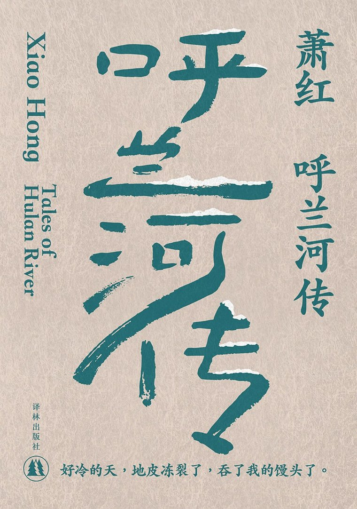

The History of Hulan River
呼兰河传
萧红以童年记忆为底，写一座东北小城的民俗烟火与荒凉人事——祖父的后花园有多温暖，小城里的愚昧与残忍就有多刺骨。茅盾称之为"一篇叙事诗，一幅多彩的风土画，一串凄婉的歌谣"。
自传体小说乡土
童年回忆1940

《呼兰河传》没有传统小说连贯的主线情节，而以记忆片段连缀成篇。前两章描摹 20 世纪初东北边陲小城呼兰河的整体风貌——十字街、东二道街的大泥坑、跳大神、放河灯、野台子戏，荒诞又写实的民俗扑面而来。
第三、四章是全书的暖色：聚焦"我"与祖父的后花园，自由烂漫的童真令人忍俊不禁。后三章则转向成人世界的冷峻——小团圆媳妇被愚昧习俗折磨致死、有二伯在尊严受辱中艰难求生、冯歪嘴子突破世俗偏见顽强活着。
全书以童年视角与成人冷峻审视交织，语言朴素诗意，兼具温情与悲凉，是中国现代长篇小说散文化的典范。
萧红 1937 年于武汉开始动笔，此后随抗战人流辗转临汾、西安、重庆、香港，断断续续写了三年。1940 年抵港后，《呼兰河传》得以在《星岛日报》副刊连载，同年 12 月完稿。彼时她贫病交加、战乱离乱，写完次年（1942）便在日军占领下的香港寂寞病逝，未能见到完整样书。
这部"不像小说的小说"，是她在生命后期为自己安排的一场精神盛宴——以童年的舒静，安慰离乱中凄苦寂寞的心灵。
| 篇目 / 章节 | 名句与释读 |
|---|---|
| 祖父的园子 | "一切都活了，要做什么，就做什么。要怎么样，就怎么样，都是自由的。"——童年自由的极致写照。 |
| 小团圆媳妇 | 十二岁女孩因"不合规矩"被婆家用大缸热水"治病"折磨致死，旧社会女性悲剧的缩影。 |
| 有二伯 | 在尊严受辱中艰难求生的老雇工，愚昧又良善，是萧红"最像人"的底层肖像。 |
| 冯歪嘴子 | 磨倌冯歪嘴子生命力最顽强，"强得使人不禁想赞美他"，荒凉里的一线生机。 |
| 尾声 | "一切忘不了的，就记在这里了。"——全书最后的苍凉落点。 |
| 年份 | 出版社 | 备注 / ISBN |
|---|---|---|
| 1941.5 | 桂林·上海杂志公司（河山出版社） | 初版，茅盾作序（无 ISBN） |
| 1995 | 人民文学出版社 | 萧红作品集常见版本 |
| 2015 | 万卷出版社 | 精装 ISBN 9787547039267 |
| 2018 | 民主与建设出版社 | ISBN 9787513918220 |
《呼兰河传》以"经验主义者、个人主义者、天然的自由主义者"的姿态，让后世看见生命本身存在的意义。它深刻影响了当代乡土与女性书写，是萧红最广为人知的代表作；其童年视角与成人冷峻的双重笔法、对国民劣根性的冷峻呈现，至今仍是中文现代文学中不可替代的一座小城。
想读完整作品？可在微信读书在线阅读《呼兰河传》全文：
📖 微信读书 · 阅读《呼兰河传》